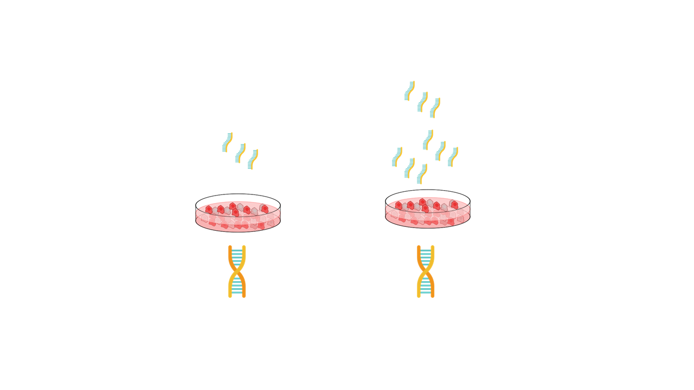

Biomedical Data Science
Analysis of transcriptome
* * *
John J.H Kim, Ph.D
Benchside to bedside is a long process
Research designs in basic biomedical research
Research designs in basic biomedical research
What kind of high dimensional data we commonly see ?
Sequencing: RNA / DNA-sequencing / single-cell sequencing data
Drug database: Drug - target interactions
Images Histology slides
What is a "transcriptome" ?
Transcription is a dynamic process
Transcription is a dynamic process

Technologies in measuring the transcriptome
Why single cells ?

Get the most variable genes
"PhenoGraph" - graph-based clustering
So what are the challenges?
How can we make a use out of the '0's
How can we make a use out of the '0's